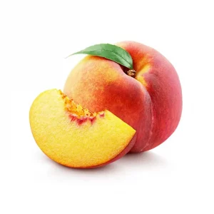
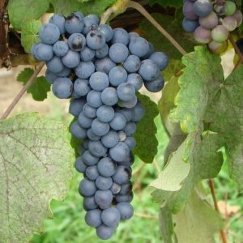
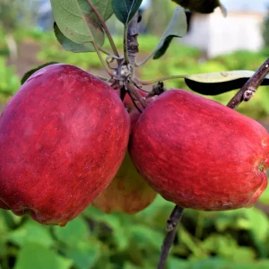

Why Choose Wambugu Apples?

Organic & Chemical-Free
Our apples are grown without harmful chemicals, ensuring healthier produce.

Year-Round Harvest
Unlike traditional apples, Wambugu apples grow throughout the year.

High Yield & Profitability
Farmers can harvest over 300 fruits per tree, boosting profitability.

Climate Adaptive
Thrives in Kenya’s diverse climates, from highlands to semi-arid regions.